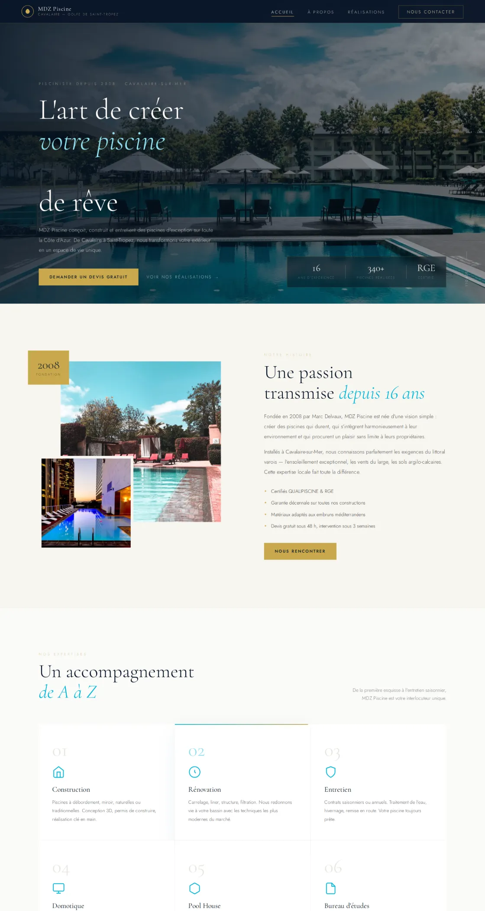
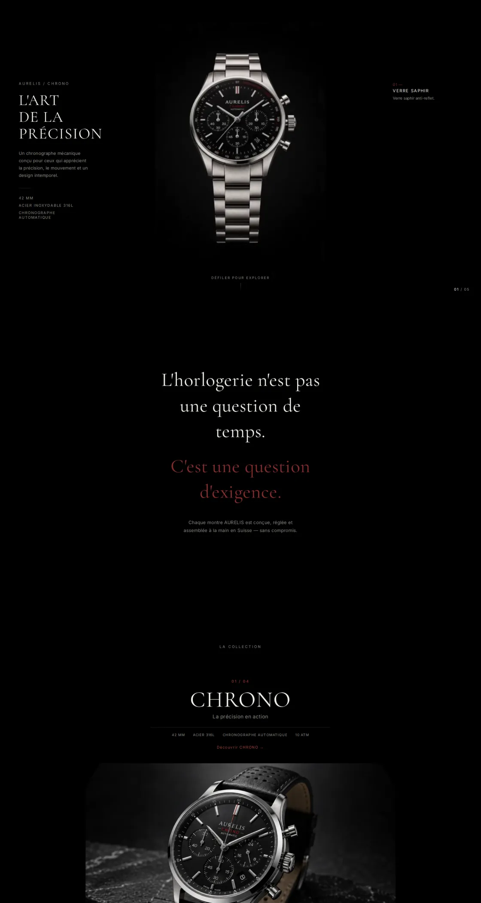
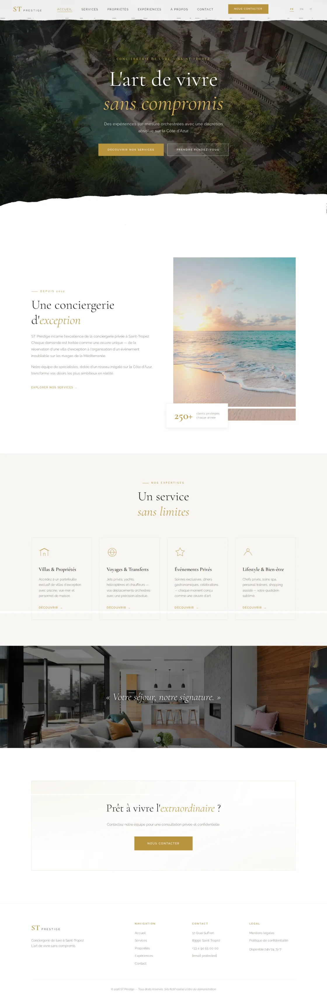
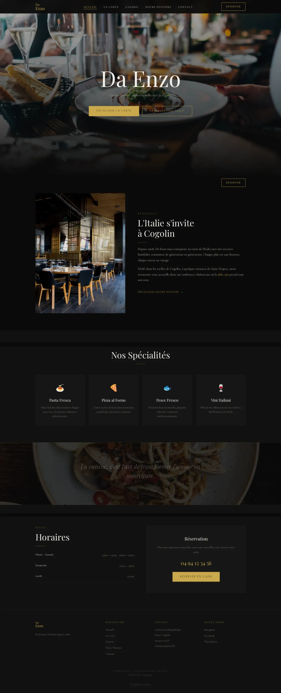

01 — Création
Site vitrine
Un site complet, prêt à recevoir des clients dès la mise en ligne : arborescence, textes, photos, formulaire et pages légales. Vous n’avez rien à faire ensuite.
Cavalaire · Golfe de Saint-Tropez
Développeur web freelance — Golfe de Saint-Tropez, Var 83
Vos clients vous cherchent sur Google. S’ils ne vous trouvent pas, ils appellent le concurrent d’à côté. Sites vitrines et référencement local pour les entreprises du Var — en ligne en 7 jours, devis gratuit sous 24 h.
Saint-Tropez · Clocher de la Paroisse
Services
Un site qui s’affiche en moins d’une seconde, qui sort sur le nom de votre commune, et que vous faites modifier d’un appel. Développé sur mesure : aucun thème acheté, aucun traceur tiers.
01 — Création
Un site complet, prêt à recevoir des clients dès la mise en ligne : arborescence, textes, photos, formulaire et pages légales. Vous n’avez rien à faire ensuite.
02 — Reprise
Votre site est lent, daté ou illisible sur téléphone — et vos concurrents passent devant. Reconstruction complète sans perdre une seule position acquise.
03 — Visibilité
Être le premier nom qui s’affiche quand un habitant cherche votre métier dans votre commune. Pages par ville, données structurées, suivi mensuel des positions. Les chiffres vous sont montrés.
04 — Présence
Sur mobile, elle s’affiche avant votre site et décroche l’appel. Création ou reprise complète : catégories, photos, horaires, avis. Le levier le plus rentable du référencement local.
05 — Vitesse
Une seconde d’attente en plus, c’est un visiteur sur cinq qui part. Images modernes, code sans dépendance inutile, cache serveur : la page s’affiche sous la seconde, même en 4G.
06 — Suite
Un horaire à changer un dimanche de juillet ? C’est fait dans l’heure. Sauvegardes, certificat SSL, mises à jour et modifications au fil de l’eau — sans ticket ni hotline.
Également : création de logo, campagnes Google Ads, rédaction de contenus.
Vidéo générée par IA
Golfe de Saint-Tropez
Ils cherchent déjà votre métier.
Reste à savoir qui ils trouvent.
Formules
Prix affichés, périmètre écrit, délai tenu. Aucun devis surprise, aucun abonnement caché — et la même exigence de réalisation sur les trois.
Essentielle
à partir de0
Professionnelle
à partir de0
Sur-mesure
Sur devis
Tarifs indiqués hors nom de domaine et hébergement. Le choix de l’hébergeur revient au client et reste à sa charge — la mise en place et le paramétrage sont compris dans la prestation.
Compris dans les trois/ Nom de domaine paramétré· Certificat SSL· Zéro cookie tiers· Prise en main en visio· Mentions légales rédigées
Réalisations
Réserver une table n’a rien à voir avec demander un devis de chantier. Quatre sites, quatre métiers, quatre logiques — et la même exigence de réalisation.
Les quatre projets présentés sont des démonstrations, développées pour des entreprises fictives du golfe. Ils illustrent le travail réel — architecture, code, référencement local. Les réalisations clientes seront publiées au fur et à mesure, avec l’accord des intéressés.




Construction et entretien de piscines. Une seule page, pensée pour un devis demandé depuis le téléphone, au bord du bassin d’un voisin.
Manufacture horlogère genevoise. Quatre modèles, une page chacun, enchaînées derrière un voile qui masque le rechargement — sur un objet pareil, le moindre à-coup casse l’illusion.
Conciergerie de luxe en français, anglais et italien. 42 pages, arborescence complète et bascule de langue sans rechargement.
Trattoria italienne. Carte, horaires et itinéraire en trois clics maximum — la seule chose que cherche vraiment quelqu’un qui a faim.
Survolez une ligne pour l’aperçu · cliquez pour la démoTouchez une ligne pour ouvrir la démo
Zone d’intervention
Vos clients ne cherchent pas « site internet » : ils cherchent votre métier dans leur commune. C’est exactement ce que vise chacune de ces pages. Premier rendez-vous sur site dans le golfe.
Commune couverte Projet de démonstration en ligne Page dédiée : cliquez sur la commune
Cavalaire-sur-Mer
Station balnéaire familiale : restaurants, campings et commerces qui ferment l’hiver.
Voir la page→Le LavandouBormes-les-MimosasHyèresRoquebrune-sur-ArgensFréjusSaint-RaphaëlLe MuyDraguignan
À distance
Ailleurs dans le Var et sur le reste du territoire, les échanges se tiennent en visioconférence. Prestation et délais identiques ; seule la forme du premier rendez-vous change.
Tout le Var→Contours communaux réels du golfe de Saint-Tropez. Votre commune n’est pas là ? Elle peut y être — dites-moi laquelle.
À propos
Pas de commercial, pas de chef de projet, pas de hotline. Vous parlez à la personne qui écrit le code, du premier appel à la dixième modification.
Un interlocuteur unique, à dix minutes de chez vous, qui répond quand vous appelez.
Weboost Studio est une activité indépendante établie à Cavalaire-sur-Mer, intervenant dans le golfe de Saint-Tropez et dans le Var.
Chaque site est développé sur mesure, sans thème acheté ni constructeur de pages. Rien d’inutile n’est embarqué : c’est ce qui permet d’obtenir des temps d’affichage inférieurs à la seconde sur mobile.
L’interlocuteur reste le même sur toute la durée du projet — cadrage, développement, mise en ligne, puis maintenance. Les demandes de modification sont traitées en direct, sans ticket ni plateforme intermédiaire.
Le cadrage débute par une visite sur site pour les entreprises du golfe : nature de l’activité, clientèle, saisonnalité, concurrence locale. La conception s’appuie sur ces éléments, non sur un gabarit.
La vente en ligne n’entre pas dans le périmètre des prestations. Une orientation vers un prestataire spécialisé est proposée le cas échéant.
Un thème acheté embarque un volume de code très supérieur au besoin réel. C’est la première cause de lenteur d’un site vitrine.
Aucune position n’est garantie sur Google : personne n’est en mesure de le faire. Le travail réalisé est en revanche documenté, et les résultats mesurés dans la Search Console.
Contact
Un appel, un rendez-vous chez vous, un devis chiffré sous 24 heures. Gratuit, sans engagement, et sans relance commerciale si vous ne donnez pas suite.